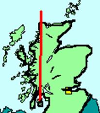

The five degree west line of longitude runs from the southern tip of the Cowal Peninsula to Cape Wrath and traverses some of the finest walking terrain in Scotland. The route described here was pioneered by the author in 2004 and attempts to follow the five degree line as closely as possible from south to north. It represents one of the most challenging long distance walks in Britain.
The basic ground rule for the walk is simple; deviation from the five degree line has to be minimised and the line must be contacted at least once every day of the walk. Although there are a number of barriers encountered on the route, forests and lochs being the principal among these, the line can in fact be followed surprisingly closely.
Clearly the route leads through some very remote country and for the majority of the trip food and camping gear have to be carried. Substantial sections are untracked. Many mountain passes, ridges and summits have to be traversed, rivers have to be forded and peat bogs threaded. The weight of a heavy rucksack has to be added to the other hardships of the route. Be warned, this is not an easy walk.
The route can be completed in about thirty days of walking and ideally should be completed in one continuous expedition. However it is realised that not everyone has this amount of holiday at their disposal so the route is described here in three sections, each of which can be comfortably completed in a fortnight allowing time to get to and from the starting and finishing points.
The end point of each day’s walk has been chosen to provide reasonable camping possibilities (and occasionally the optional luxury of B&B or hotel accommodation). The daily distance travelled can of course be increased according to one’s personal fitness. The route described here is that of the author but there exists scope for improvements which would follow the line even more closely. Some of these are noted in the route description.
Should you decide to undertake the Five Degree West Challenge you will not be disappointed. In the author’s (modest) opinion it is one of the finest walks in Europe.
If you complete the challenge let me know. Send your details and your name will be published on the ‘Five Degree West Challenge - Role of Honour’.